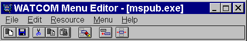
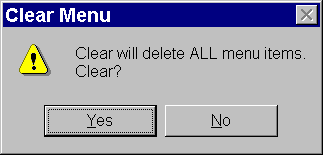
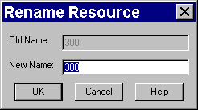
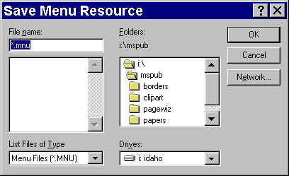

Index of Topics
- - A -
- Adding a New Menu Item
- C -
- Changing an Existing Menu Item
Creating a New Menu
- D -
- Deleting a Menu Item
Deleting All Menu Items
Deleting Menu Items
- M -
- The Menu Editor Menu Bar
The Menu Editor Toolbar
Menu Editor: Action Buttons
Menu Editor: Attributes Area
Menu Editor: Changing Memory Options
Menu Editor: Copy To
Menu Editor: Menu Item List
Menu Editor: Resource Name Field
Menu Editor: Save As
Menu Editor: The Preview Window
Menu Editor: Update
Menu Functions
- O -
- The Open Watcom Menu Editor
Opening an Existing Menu
- Q -
- Quitting the Menu Editor
- R -
- Renaming a Menu
- S -
- Saving Menu Items
Starting the Menu Editor
- U -
- Using Shortcuts to Create menus
Using the Menu Editor
Using the Menu Editor Window
Windows applications typically contain menus that enable users to initiate actions. When users see familiar menus
in the menu bar, such as the File or Edit menu, they may feel less intimidated by a new application and be more apt to explore
its capabilities.
In an application you can have three types of menu items:
A standard menu item performs a function when selected. A popup menu item is a menu item with a sub-menu.
Selecting a popup menu reveals another menu list, rather than performing a function. A separator is a horizontal line
that separates groups of menu items within a popup menu. A resource file can have multiple menus.
The Open Watcom Menu Editor enables you to create new menus and edit existing menus found in resource files.
A resource file may contain multiple menus.
With the Menu Editor you can create all of the menus needed for your application visually, without having to create
a resource script or use a resource compiler.
This section discusses the following topics:
- Starting the Menu Editor
- Quitting the Menu Editor
- The Menu Editor Menu Bar
- The Menu Editor Toolbar
The Menu Editor may be invoked in one of two ways. The first involves first starting the Resource Editor then starting
the Menu Editor. The second way the editor may be started is from the Open Watcom IDE.
To start the Menu Editor from the Resource Editor, you must first open the Resource Editor. How you proceed
depends on whether you are opening a new (empty) menu table or an existing menu table.

Figure 1. The Menu Editor window
- (1)
- Double click on the Resource Editor icon in your Windows Program Manager.
The Open Watcom Resource Editor window opens.
(2)
- Open a new or existing resource file.
(3)
- Choose New from the Resource menu.
A cascading menu appears from the New menu item.
(4)
- Select Menu from the New cascading menu.
The Open Watcom Menu Editor window opens and displays an empty menu.
- (1)
- Double click on the Resource Editor icon in your Windows Program Manager.
The Open Watcom Resource Editor window opens.
(2)
- Open an existing Resource File.
The Resource window for the existing resource file displays buttons representing each existing resource type.
(3)
- Select the menu button to view the existing menus.
or
- Choose Menu from the cascading menu that appears when you choose View from the Resource menu.
The Menu list appears revealing all menus in this resource file.
(4)
- Double click on the existing menu you want to open
or
- Click on the desired menu to select it, then press ENTER or choose Edit from the Resource menu on the
Open Watcom Resource Editor window.
The Open Watcom Menu Editor window opens and displays the selected menu.
To exit the Menu Editor, choose Exit from the File menu of the Open Watcom Menu Editor window.
If you made changes to menu items but did not save the information, a message box prompts you to save before exiting.
Choose Yes to save the changes and exit the Menu Editor, No to exit the Menu Editor without saving the changes, or
Cancel to return to the Menu Editor.
When you exit the Menu Editor, the application remembers the directory in which you last opened or saved a menu (not
the resource file). The next time you open a menu, the last directory accessed appears in the File Selection dialog
so you do not have to reenter its path. This feature makes the Menu Editor more convenient and efficient to use.

Figure 2. The Menu Editor menu bar.
The menu bar consists of the following five menus:
- File
- Clear and save the menu, and exit the Menu Editor
Edit
- Access the clipboard functions, hide or show the toolbar, and delete a menu
Resource
- Rename the menu and change its memory flags
Menu
- Insert menu entries
Help
- Access on-line help information
To see the function of an item in the menu bar or submenus, hold the mouse button and drag the cursor over the desired
menu item. A description of the item appears in the status line at the bottom of the screen. If you do not want
to select the menu item, drag the cursor off of the menu item before releasing the mouse button.
In the Open Watcom Menu Editor window, the toolbar appears below the menu bar. When the toolbar is shown choose
Hide Toolbar from the Edit menu to hide it. When the toolbar is hidden you can display it by choosing Show Toolbar
from the Edit menu.

Figure 3. The Menu Editor toolbar.
The following explains the function each icon performs, as well as the equivalent function in the menu bar.
- Clear
- Clear the menu workspace. This is equivalent to Clear in the File menu.
Save
- Save the current menu. This is equivalent to Update in the File menu.
Cut
- Cut the current menu item to the clipboard. This is equivalent to Cut in the Edit menu.
Copy
- Copy the current menu item to the clipboard. This is equivalent to Copy in the Edit menu.
Paste
- Paste the menu item that is on the clipboard to the current menu workspace. This is equivalent to Paste in the Edit
menu.
Delete
- Delete the selected menu item from the menu workspace. This is equivalent to Delete in the Edit menu.
Only one of the following two buttons appears at a time. The displayed button indicates where new menu items will
be inserted. When one is selected the other one replaces it on the toolbar.
- Insert Before
- When this button is displayed, new menu items will be inserted before the currently selected menu item. Selecting this
button is equivalent to selecting Insert After from the Menu menu.
Insert After
- When this button is displayed, new menu items will be inserted after the currently selected menu item. Selecting this
button is equivalent to selecting Insert Before from the Menu menu.
- Insert
- This button will insert a new menu item into the menu. This is equivalent to Insert New Item in the Menu menu.
To see the function of an item in the toolbar, position your cursor over the desired button. A description of the
button's function appears in the status line at the bottom of the window.
The Open Watcom Menu Editor window contains a menu bar, toolbar, and status line to help you create and edit menus.
The rest of the window is divided into five sections:
- Resource Name Field
- Preview Window
- Attributes Area
- Menu Item List
- Action Buttons

Figure 4. On the Open Watcom Menu Editor window, you create menus for your application.
The Resource Name field in the Open Watcom Menu Editor window contains the name of the menu currently being edited.
A resource file can contain more than one menu, so it is important that the resource names for the menu resources be unique.
The Resource Name field is not case sensitive and can hold up to 255 characters. You can enter a textual name,
a number or a symbol in this field.
When you create a new menu, the Resource Editor assigns the default name MENU_# to it. You can rename the menu
using the Rename item in the Resource menu.
The Preview window appears on the Menu Editor window above the menu item list. This window allows you to see how
the menu you are creating will look in the application. The popup menu items in the preview window are functional so
you can test your menu as you create it.

Figure 5. The preview window allows you to see how the menu will look and work in the application.
You can use the sample menu that appears in the preview window to test the behaviour of your menu items. For
example, by selecting top-level menu items in the preview window you can check the positions and breaks of your menu items
and separators. The preview window allows you to verify that your menus cascade properly and that other attributes
function properly, including inactive, grayed, and check marked menu items.
The attributes area provides information about the currently selected menu item. You can edit menu items using only
the fields in this area.
The attributes area displays menu item details in five sections. Following is an explanation of each section.
- Item Text
- The Item Text field contains the name of the menu item. Whatever appears in this field will appear in the menu.
An ampersand (&) in front of a letter in this field tells the editor to underscore that letter in the menu.
This automatically creates a hot key for that menu item. When using the menu, pressing ALT plus the underscored letter
activates that menu item.
To specify a tab character, enter \t in this field. All text after \t in the Item Text field will be right justified
in the menu.
Item ID
- The Item ID is the unique numeric identifier for the menu item. In the source code, you match the identifier to the
function the menu item is to perform. The Item ID applies only to normal menu items. Popups and separators do
not perform functions, so do not need an identifier.
You can enter any number in the range 0 to 65535 in the Item ID field. Hexadecimal values can be entered by prefixing
them with 0x. Octal values can be entered by prefixing them with zero.
The two Item ID fields contain:
- the numeric identifier of the selected menu item
- the symbol information for the selected menu item.
- Note:
- Both Menu Item fields currently contain the same numerical information because the Menu Editor does not yet support symbols.
Item Type
- The Item Type section of the window indicates whether the selected menu item is a popup, normal, or separator menu item.
Following is a description of each menu item type.
- Popup
- A popup menu is a menu item that has a sub-menu. When you select a popup menu, another menu appears.
Normal
- A normal menu item is an item that performs a function when selected.
Separator
- A separator menu item is a horizontal line that separates menu items to logically group menu items with similar functions.
When a separator is selected from the menu item list, the Item Text and Item ID fields are always empty because they
do not apply to separators.
Attributes
- The options in the Attributes section allow you to specify how the selected menu item will appear in the menu. Use the
check boxes to select the desired menu item characteristic. Following is a description of each option.
- Checked
- When the Checked option is selected, the menu item appears in the menu with a check mark beside it. This is a graphic
only and does not affect the functionality of the menu item.
- Note:
- Top level menu items cannot be checked.
Grayed
- When the Grayed option is selected, the menu item text appears in gray instead of black. This option also makes the
menu item inactive.
Inactive
- When the Inactive option is selected, the menu item appears unchanged in the menu. However, this option prevents the
menu item from being selected.
Break Styles
- The options in the Break Styles section control the positioning of the menu items. The break styles you choose affects
the selected menu item and all menu items that follow that item. Following is a description of the available options.
- Help
- The Help break option positions the selected menu to the far right of the menu bar. This option is available only for
top-level menus.
Menu
- For top-level menu items, the Menu break option begins a new line in the menu bar, positioning the selected menu item on the
far left. In a popup menu, this break option creates a new column, positioning the selected menu item at the beginning
of the new column.
- Note
- The Menu option overrides the Menu Bar option.
Menu Bar
- For top-level menu items, the Menu Bar break option performs the same function as the Menu break option. In a popup
menu, the Menu Bar break option creates a new column, beginning with the selected menu item and places a vertical line between
the columns.
The menu item list displays the menu items in the current menu. Use this list to view the attributes of the menu
items listed. Select a menu item from the table by clicking on it. Details of the selected menu item appear in
the attributes area of the window.
The action buttons control how the information in the attributes area is handled by the editor. The Insert button
will use the contents of the attributes area to create a new entry in the menu. The Change button will use the contents
of the attributes area to modify the current entry in the menu. The << (shift left) button will cause the current
menu item to become a subitem of its parent. This button is enabled only when the current item is the last item in
its parent menu. The current item will visually appear to shift left. The >> (shift right) button will
cause the current menu item to become the last subitem of the popup menu preceding it. This button is enabled only
when the item preceding the current item is a popup menu. The current item will visually appear to shift right.
The Reset button will discard the contents of the attributes area and reset them to those of the current entry in the menu.
The Insert button is the default button when the ENTER key is pressed and no other button has the focus.
You can perform several functions with the Menu Editor. This section describes the following tasks:
- Adding a New Menu Item
- Changing an Existing Menu Item
- Deleting Menu Items
- Renaming a Menu
- Saving Menu Items
- Using Shortcuts to Create Menus
- Changing Memory Options
The steps for adding a new menu item to a menu are the same, regardless of whether the menu item list is empty or already
contains menu items. Follow these steps to add a new menu item.
- (1)
- Enter the text for the menu item in the Item Text field.
To set one of the letters as a hot key, insert an ampersand (&) directly in front of that letter. The letter
marked as the hot key key appears underlined in the menu item text. For example, to add the menu item Cut
with the letter t as its hot key, enter Cu&t in the Item Text field.
To have text in the menu item appear right justified, enter the code \t in the Item Text field. For example,
to add the entry Open with the accelerator Ctrl+O right justified, enter Open\tCtrl+O in the Item
Text field.
(2)
- Enter a symbol or numeric identifier for the menu item.
The identifier in this field is the unique identifier associated with the menu item. You define the relationship
between the menu item function and this identifier in the source code for your application.
You must enter a value between 0 and 65535 in this field. Hexadecimal values can be entered by prefixing them
with 0x. Octal values can be entered by prefixing the with zero.
(3)
- Select the type of menu item you wish to create
Use separators in your menus to logically group menu items with similar functions. When adding a separator to your
menu you do not need to complete the fields in the Attributes Area of the Menu Editor window.
(4)
- Select the desired attributes for the menu item in the Attributes section of the workspace.
Refer to the section entitled Using the Menu Editor Window for a description
of each attribute.
(5)
- Select the desired break styles for the menu item in the Break Styles section of the workspace
Refer to the section entitled Using the Menu Editor Window for a description
of each break style.
(6)
- Select Insert Before or Insert After from the Menu menu or the toolbar.
The toggle button on the toolbar indicates if the new menu item is to be inserted into the menu item list before or after
the currently selected menu item. In the Menu menu, the Insert After item is checked if new menu items will be added
after the current item. The Insert Before item is checked if new items will be added before the current item.
(7)
- Press the Insert action button
or
- Choose Insert New Item from the Accelerator menu.
or
- Select the Insert New Item button on the toolbar.
The new menu item appears in the menu item list and the Preview Menu window.
You may want to change the attributes of a menu item in a menu.
- To change an existing menu item:
-
(1)
- Choose the menu you want to work with from the Resource window on the Open Watcom Resource Editor window.
The Menu Editor window appears displaying all of the menu items for the selected menu.
(2)
- Click the menu item you want to modify.
The selected menu appears highlighted in the menu item list and the menu item details appear in the attributes area of
the window.
(3)
- Select the field you want to change using the Tab key or the mouse.
(4)
- Make the desired menu item changes.
(5)
- Press the Change action button
This updates the selected menu item with the modified menu item details.
There are two functions you can use to delete menu items from the menu item list:
The Delete function in the Edit menu deletes the selected menu item. You can delete only one menu item at a time
with this function. Deleting a popup menu item also deletes all of the submenus for that item.
The Clear function in the File menu deletes all menu items in the current menu. This is a powerful function
and must be used carefully to avoid accidentally deleting an entire menu item list.
To delete menu items from the current menu one at a time:
- (1)
- Select the menu item you want to delete from the menu item list by clicking on it.
The selected menu item is highlighted.
(2)
- Choose Delete from the Edit menu
or
- Select the Delete button from the toolbar.
The Menu Editor removes the selected menu item from the menu item list.
(3)
- Choose Update from the File menu to save the menu changes.
To delete all menu items in the current menu:
- (1)
- Choose Clear from the File menu
or
- Select the Clear button from the toolbar.
A message box appears prompting you to verify that you want to clear all of the menu items from the current menu.
(2)
- Choose Yes or No to continue.
Choosing Yes removes all menu items from the current menu. The menu item left list is empty.

Figure 6. As a safety feature, a message box appears when you choose the Clear function.
When you create a menu, the Resource Editor assigns a default name to it. Assign a new name to the menu using the
Rename menu item.
- (1)
- Choose Rename from the Resource menu on the Open Watcom Menu Editor window.
or
- Double click or right click on the Resource Name field.
A Rename Resource dialog box appears containing two fields:

Figure 7. In the Rename Resource dialog, you enter the new name of the menu.
(2)
- Enter the desired menu name in the New Name field.
(3)
- Click on OK to close the Rename Resource dialog.
The dialog closes and the new menu name appears in the Resource Name field.
There are three functions you can use to save menus with the Menu Editor:
Each of these options performs a different type of save function. This section describes how to use each function.
After modifying a menu item in a menu, choose Update from the File menu on the Menu Editor window to save the updated
menu to the current resource file. This prevents the changes from being lost when you exit the Menu Editor.
The Update function updates the resource file only at the resource level. The resource file is not saved until
you perform a save at the Resource Editor level as well. Exiting the Resource Editor without saving causes you to lose
any the menu changes made.
Choose Save As from the File menu on the Menu Editor window to save the current menu to another resource file. A
Save Menu dialog appears where you specify the resource file to which you want to save the current menu.

Figure 8. On the Save Menu dialog, specify the resource file to which you want to save
the menu.
- Important:
- If the resource file to which you are saving the menu already contains resources, the existing resources will be discarded
and replaced with the menu you are saving.
Choose Copy To from the Resource menu on the Menu Editor window to copy the current menu item list into an existing resource
file. A Copy To dialog appears where you specify the resource file to which you want to copy the current menu item
list. Unlike the Save As function, copying a menu item list to a resource file adds an entry to the list of resources
rather than replacing the existing resources with the new entry.

Figure 9. On the Copy To dialog, specify the resource file to which you want to copy the
menu item list.
The Edit menu on the Open Watcom Menu Editor window contains some standard Windows options that you can use to quickly
create menu resources. The options are:
These options allow you to perform functions on menus but not on individual menu items.
- Cut
- Choose Cut from the Edit menu of the Menu Editor window to cut the menu item list from the current menu and paste it to the
clipboard.
Copy
- Choose Copy from the Edit menu of the Menu Editor window to copy the menu item list from the current menu to the clipboard.
Paste
- Choose Paste from the Edit menu of the Menu Editor window to copy the menu on the clipboard into the current menu item list.
The Memory Flags option allows you to change the selected memory options for the current menu. These options indicate
the memory type and loading instructions.
- To set the flags for a menu resource:
-
(1)
- Choose Memory Flags from the Resource menu of the Open Watcom Menu Editor window.
The Memory Options dialog opens displaying either the current or default memory options.
(2)
- Select the required flags in the Memory Options and Load Options sections of the dialog by clicking on the check box
beside the field. Following is a description of each option.
- Moveable
- Selecting this option marks this menu to be stored in moveable memory when it is loaded by an application.
Discardable
- Selecting this option marks this menu to be stored in discardable memory when it is loaded by an application.
Pure
- When marked as Pure, Windows will not allow the memory that the menu is loaded into to be modified.
Preload
- All menus marked as Preload will be loaded when the application for which you are creating the menu is loaded.
LoadOnCall
- Menus marked as LoadOnCall will be loaded when an application issues a call to load them.
(3)
- Click on OK when all memory option selections are made.
The Memory Options dialog closes returning you to the Menu Editor window.